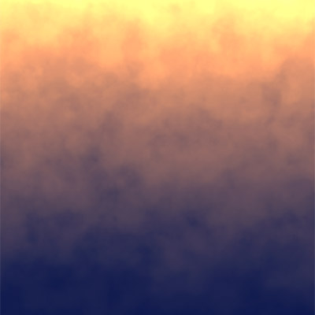
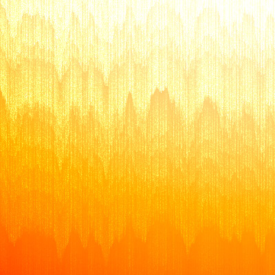
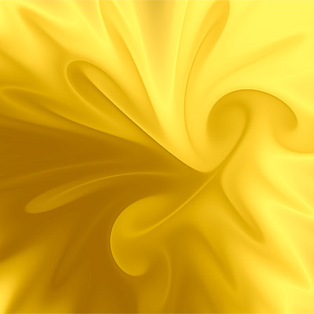
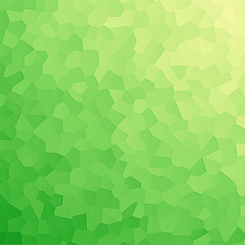
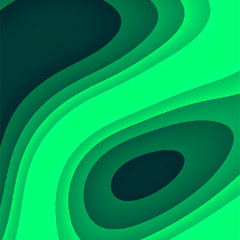
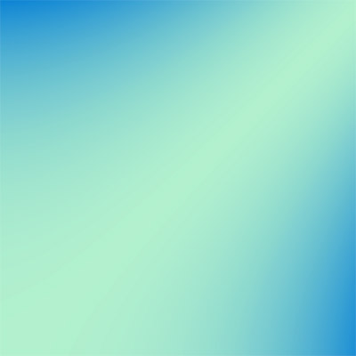
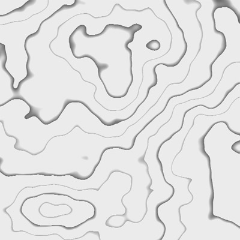

makebackground.io was developed as an experimental platform to offer on-the-fly animated backgrounds in your browser. Initially, there were limitations in video format generation, leaving room for improvement.
Meanwhile, we have introduced support for additional formats like MP4 and WebM on another platform, loading.io. Consequently, we have decided to transfer the animations from makebackground.io to loading.io, where enhanced editing and generation tools are available.
loading.io provides backgrounds in both vector and raster formats, offering advanced controls such as frame blending, rates, speed, and duration. If you're in search of animated backgrounds, this is a resource you won't want to overlook.
makebackground.io ran from 2018 to 2026. The service has been retired and this page is kept as an archive of the original site. Animated backgrounds with more formats are available on loading.io.